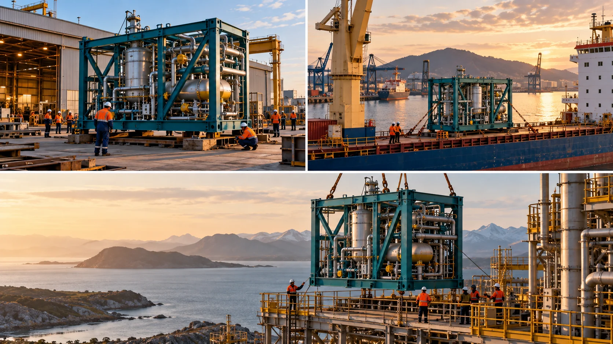

P21 · 고급 · 제작·활용
DHL: 서로 다른 항구를 한 과정으로 연결하기
장소가 바뀌어도 같은 화물의 이동 과정임을 이해시키는 연결 정보를 정한다.
그림에서 확인할 세 가지여러 장소의 항공·지상 컷을 하나의 과정으로 연결한다.
1같은 모듈의 형태
세 가상 장면에 반복되는 산업 모듈의 형태를 찾는다. 배경이 바뀌어도 같은 물체라고 알아볼 수 있는 특징이 무엇인지 비교한다.
2항구의 배치
넓은 그림에서 크레인·선박·부두와 화물의 상대 위치를 읽는다. 화물의 크기뿐 아니라 어떤 작업이 가능한 장소인지 설명해 본다.
3설치 단계의 차이
마지막 장면에서 모듈 주변의 지지 구조와 작업 환경을 본다. 이동 중인 물체와 설치된 물체를 구분할 시각 단서가 충분한지 판단한다.
촬영 설계
촬영을 이렇게 설계한다
공정과 장소를 표로 연결
교육 제안: 출발·운송·설치 단계별로 관객이 알아야 할 변화를 적는다. 장소 이름만 바꾸는 구성보다 같은 대상의 상태가 어떻게 달라지는지 보여주는 촬영 목록을 만든다.
전체와 행동을 짝짓기
교육 제안: 항공 컷으로 작업 위치와 규모를 설정한 뒤 지상 컷으로 실제 작업을 보여준다. 큰 화물만 반복하지 말고 어느 방향으로 옮기는지 이해할 수 있는 연결 단서를 확보한다.
후반 설명의 역할 한정
교육 제안: 영상만으로 구분하기 어려운 장소는 지도·위치 표기로 보완한다. 자막이 실제 화면보다 많은 사실을 주장하지 않는지 확인하고 출처마다 다른 수치는 사용 전에 검증한다.
DHL의 중량 화물 운송을 세 촬영 지점에서 기록하고 지도와 위치 표기를 더했다.
원본 영상DHL: 서로 다른 항구를 한 과정으로 연결하기
1. 대상의 연속성
장소가 바뀌는 구간마다 운송 대상의 같은 특징을 찾는다. 배경 변화만 있는지 실제 공정의 변화도 화면으로 설명되는지 구분한다.
2. 작업의 이해
크레인과 화물의 상대 위치를 원본에서 관찰한다. 장비가 보이는 장면과 물체가 어떻게 옮겨지는지 이해되는 장면을 구분한다.
3. 설명의 정확성
원본의 지도·위치 표기와 실제 영상의 역할을 나누어 본다. 글이 화면의 공백을 설명하는지 확인되지 않은 수치를 덧붙이는지 살핀다.
재생이 제한되면 원본 영상 새 창을 이용하세요.
제작진 설명 · 한국어 요약 번역
세 지점 촬영과 현장 조건
촬영 지점
원문 요약 번역: 제작사는 DHL 산업 프로젝트 부문의 발전 설비 운송을 세 지점의 영상·항공·사진 촬영으로 기록했다고 설명한다.
영국 이밍엄 항만의 도착, 로테르담의 바지선 적재, 펨브로크 발전소의 설치가 촬영 대상이었다.
현장 조건
현지 팀이 현장 절차와 안전을 맡았고 제한 구역 접근도 확보했다고 한다.
후반 작업
편집·색보정·사운드·지도 그래픽은 제작사가 직접 처리했다.
제작진 설명 · 한국어 요약 번역
장비 목록과 활용 범위
장비 목록
원문 요약 번역: 장비 목록에는 8K 항공용 Inspire 3와 X9-8K Air, 사진용 Mavic 4 Pro가 있다.
FPV에는 Blackmagic Cinema Camera 6K, 주 카메라에는 RED Komodo 6K가 적혀 있다.
다만 어느 장면에 어느 장비를 썼는지는 밝히지 않는다.
활용 범위
발전기 중량이 두 가지로 적혀 있어 수치는 쓰지 않는다.
결과물은 DHL의 링크드인과 마케팅에 활용됐다고 한다.
Kling 프롬프트단문 인과 체인 · 16:9
내가 직접 만들어 본다
같은 모듈이 장소를 옮겨 가며 상태가 달라지고 다음 단계로 이어지는 순서를 지시한다.
- S01항구 부두에 노란 모듈 하나가 놓여 있다.
- S02영상은 하나의 연속 쇼트다.
- S03화면에 드론 기체는 나오지 않는다.
- S04처음 10초 동안 카메라는 모듈과 크레인을 함께 담는다.
- S05크레인이 모듈을 들어 올린다.
- S06모듈이 떠오르기 때문에 부두 바닥이 멀어진다.
- S07크레인이 모듈을 선박 갑판에 내려놓는다.
- S08다음 10초 동안 선박이 모듈을 싣고 항구를 떠난다.
- S09카메라는 같은 모듈을 계속 화면에 두고 따라간다.
- S10그래서 배경의 부두가 바다로 바뀐다.
- S11마지막 10초 동안 선박이 다른 항구에 닿는다.
- S12그 항구의 크레인이 같은 모듈을 건물터에 내린다.
- S13모듈이 내려앉자 지지 구조가 모듈을 받친다.
- S14카메라는 설치된 모듈을 화면 중심에 두고 끝난다.
[네거티브]
- 모듈 대신 여러 컨테이너가 쌓여 있는 것 금지
- 중간에 컷이 바뀌어 장면이 끊기는 것 금지
- 화면에 드론 기체가 나타나는 것 금지
- 모듈이 크레인과 떨어져 따로 찍히는 것 금지
- 모듈이 땅에서 옆으로 미끄러지는 것 금지
- 모듈이 올라가도 바닥과의 거리가 그대로인 것 금지
- 모듈이 갑판 밖 바다로 떨어지는 것 금지
- 선박이 모듈 없이 혼자 떠나는 것 금지
- 카메라가 모듈을 잃고 바다 풍경만 찍는 것 금지
- 배경이 부두 그대로 멈춰 있는 것 금지
- 처음 항구와 똑같은 풍경에 도착하는 것 금지
- 다른 모양의 모듈이 내려지는 것 금지
- 모듈이 허공에 뜬 채 받침이 없는 것 금지
- 모듈이 화면 밖으로 밀려나며 끝나는 것 금지
결과에서 볼 것
- 장소가 바뀌어도 같은 모듈이라고 알아볼 수 있었는가
- 모듈의 상태가 부두, 선박, 설치 순서로 달라졌는가
- 앞 단계가 다음 단계의 이유로 이어졌는가